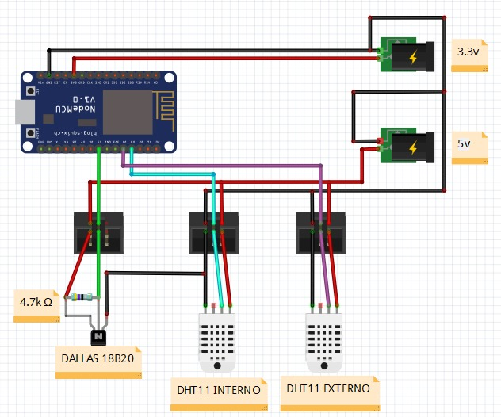

Como Funciona o Monitoramento das Abelhas?
No projeto do meliponário no IFSC, o Arduino está sendo utilizado como a base para monitoramento das condições do ambiente onde as abelhas vivem. Ele atua como um microcontrolador, responsável por coletar dados de sensores, processá-los e, possivelmente, transmitir essas informações para análise. Os sensores conectados ao Arduino, medem temperatura e umidade, fatores essenciais para o bem-estar das abelhas. O objetivo desse sistema é garantir um monitoramento eficiente e em tempo real, ajudando a identificar variações ambientais que possam afetar a colmeia.
